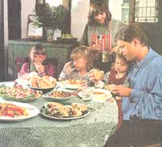
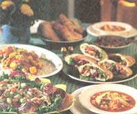

Most of us remember the days when cooking a turkey was only an annual event. The rest of the year a turkey was a rare bird at any supermarket. But times have changed; poultry consumption is at an all-time high, with beef taking a back seat. Turkey parts join their chicken counterparts when it comes to availability and selection. That big bird can be bought ground, cut up or in boneless cutlets. In terms of protein, turkey compares favorably to red meat, but with the skin removed, it has only a fraction of the fat. Compared with chicken it's just as low in fat and lower in cholesterol, but taste-wise it's a more flavorful bird. Turkey can also be less expensive, depending on local sales.
So where do all the best turkeys hang out - in the freezer section of your local supermarket? Not likely. Those poor turkeys were drug addicts who died before their time. Mass-produced turkeys are fed antibiotics and growth hormones - turkeys on steroids, you might say. These pumped-up birds have a short life before reaching the butcher, who may use additives to prolong freshness or yellow dye for visual appeal. Worse yet are the turkeys who are injected with a self-basting substance meant to impersonate butter.
But with just a few weeks before Thanksgiving, what options are available? Let your fingers do the walking and call your local grocers, butchers and health food stores to find out where naturally raised turkeys are sold. In Chicago we buy our turkeys at Whole Foods. These turkeys are raised without machinery on an Amish farm called Kauffman's Farm. They're free-range, so they're leaner (from all that exercise) and they're less likely to be riddled with bacteria because these turkeys don't suffer from the effects of mass production. The taste is also much improved, as the results of our last few Thanksgivings bear out. I know, you're complaining that these turkeys usually cost more, but that's because they live a long and happy life, requiring more feed and attention.
Our first experience with naturally raised turkeys was a few years ago when we lived on a farm not far from our relatives. One year they decided to raise two turkeys for the holidays. By Halloween those turkeys had grown to a tremendous size and had developed some impressive watchdog characteristics. No stranger that drove onto the farm dared set foot out of the car with two chest-high, 40-pound turkeys lunging at them.
Besides terrorizing, these turkeys liked to let our nieces and nephews chase them around the outside of the house. We watched this movie-like event through the big picture window with a soundtrack of "gobble-gobble scream-scream" until the turkeys turned around and chased them, "scream-scream gobble-gobble." Those watchdog turkeys were never eaten for Thanksgiving but continued to guard the farm and chase the children or let the children chase them for the next few years.
Look for sales, especially the day after Thanksgiving and Christmas. This is a good time to buy turkey parts, such as thighs, for a low price. I simmer them in a soup pot with water, debone the turkey, and freeze it in bags of containers for casseroles, enchiladas, or soups. Save the stock for soup or freeze for later. Additionally, try ground turkey instead of ground beef or pork for meatballs, meat loaf, tacos and chili. Don't tell, and the family may not notice the difference.
The following are a few out-of-the-ordinary ways to use the festive fall bird.
This is a quick and easy recipe to use with leftover turkey scraps or frozen cooked turkey.
2 cups cooked turkey, shredded into strips
1 1/2 tbsp flour
1 tbsp olive or canola oil
1 medium onion, thinly sliced
4 large cloves garlic, minced
4 tsp curry powder
1/8 tsp cayenne pepper
1 small red pepper, thinly sliced
1/2 cup chicken broth
1 1/2-2 cups mango nectar*
1 medium-large mango, chopped into cubes
1/2 tsp each sugar, salt and pepper
3/4 cup frozen baby peas
cooked rice (I use brown basmati rice)
chopped cilantro or parsley
Begin rice preparation 45 minutes before serving. Place the flour and turkey strips in a plastic bag, then shake until coated. Heat olive oil in a large skillet and sauté strips for a few minutes, then add onion and garlic, continue to sauté until they are golden. Add spices and red pepper. Swish around for about 1 minute, then add broth, nectar and sugar. Cook on medium heat until mixture starts to bubble. Add peas and salt and pepper to taste. If it seems too thick, add a little more nectar. Simmer for about two minutes until the peas are done. Serve over rice and top with the chopped parsley or cilantro.
A mango is easiest to cut if it's not mushy-ripe. Cut the mango into quarters to the pit and then cut the fruit away from the pit. Pare off the skin and chop.
If you like your soup extra spicy, add an extra ancho chile or a slice of fresh jalapeno pepper when preparing this soup.
1 tsp olive oil
1 medium onion, peeled and quartered
6 large cloves garlic, peeled and halved
4 cups chicken or turkey broth (2 16-ounce cans)
1 28-oz can plum or regular tomatoes in puree or juice (the puree will make a thicker soup)
1 tsp ground cumin
1/2 tsp ground coriander
3 dried ancho chilies, seeds and stems removed
2 cups shredded cooked turkey or chicken
1 cup corn
juice of 1 lime
salt and freshly ground pepper to taste
Toppings
1 package corn tortillas chopped cilantro grated muenster cheese or crumbled rancherito (Mexican farmer cheese) sliced avocado chopped green onions "lite" sour cream
Sauté the onion and garlic in the oil for a minute or so in a large soup pot. Add all the ingredients up to and including the ancho chilies. Add the tomatoes, the puree or juice. Cover and simmer for 25-30 minutes. Pour into a blender and blend well. This will have to be done in batches. Pour back into the pot and add the turkey and corn. Simmer for 5-10 minutes until the corn is cooked. Add the lime juice and taste for salt, pepper, and degree of spiciness. If the soup is too thick or spicy, add water. Top with baked tortilla chips* and optional toppings.
*Cut tortillas in half and then into 1/2-inch strips. Place on a large cookie sheet and bake in a 400-degree oven for about 15-20 minutes until crispy. Toss once after about 10 minutes in the oven.
Instead of ground beef, try using ground turkey for this spicy sandwich. The picadillo could also be served over rice for dinner.
1 tsp olive oil
1 lb ground turkey (I purchase ground dark meat, which is less expensive.)
1 medium onion, chopped
2 large cloves garlic, minced
1/4 tsp jalapeno, minced, or 1/8 tsp ground cayenne pepper
1 tsp cinnamon
1/2 tsp chili powder
1/2 tsp allspice
1/2 tsp oregano
1 cup drained canned tomatoes in puree, coarsely chopped (save the puree)
1/2-1 cup reserved tomato puree (save remainder for thinning later)
1/2 cup celery, finely chopped (2 stalks)
1/4 cup black or green pitted olives, chopped
1 cup apple, chopped into 1/2-inch pieces
salt and pepper to taste
romaine lettuce, chopped
pita bread, whole wheat or white
In a large skillet, heat the olive oil and fry the turkey until it starts to brown. Add the onions, garlic, and hot pepper; and sauté until limp. Stir in the spice and sauté for a minute or so. Add the chopped tomatoes, 1/2 cup of the puree, celery, olives and apples. Simmer until the vegetables are tender (about 15 minutes). Add additional puree if the sauce is too thick. Add salt and pepper to taste. Lightly toast pita bread, slice in half, and stuff with picadillo and chopped lettuce.
Unless there's four feet of snow on the grill, barbecued turkey is great any time of the year. The barbecue sauce can be made any time ahead. Since the turkey breasts are expensive, I use drumsticks and thighs. Throw some sweet potatoes on the grill, toss a salad, and you have a perfect meal for guests.
turkey drumsticks/thighs, not too large
olive oil
garlic cloves, smashed
fresh or dried thyme, oregano
sweet potatoes, cut in half lengthwise
BBQ sauce (or use your favorite natural brand):
2 tsp olive oil
1/2 medium onion, coarsely chopped
2 large cloves garlic, coarsely chopped
1/2 jalapeno pepper (about 1/2-inch long), seeded
3 tbsp apple cider vinegar
3 tbsp Worcestershire sauce
4 tsp chili powder
1/2 tsp oregano
pinch cloves
2 tbsp brown sugar
2 tsp liquid smoke
salt and pepper to taste
1/4 cup water
1 12-oz can tomato puree
1/4 cup lemon juice (or pineapple juice)
Sauté the onion, garlic, and jalapeno in olive oil until they just start to brown. Add all the ingredients up to and including the water. Simmer about 10 minutes until the vegetables are tender. Pour into a blender and blend until smooth. Return to pan with the rest of the ingredients. Simmer about 10 minutes until bubbly. Add salt, pepper and additional hot stuff to taste. Add water until you have the desired consistency.
Variations: Add beer instead of juice and water. Try adding some chipotle peppers or ancho chili powder.
Steam the sweet potatoes in a covered pot for 15-20 minutes until they start to soften. Prepare the grill. Simmer the garlic and olive oil in a saucepan for about 5 minutes. Brush on the turkey pieces and sweet potatoes. Sprinkle with herbs. Lay the turkey in the center of the grill with the potatoes on the outside. (The sugar in the potatoes makes it necessary to watch closely. Flip them over if they start to burn.) Cover the grill and cook until the turkey starts to brown. Brush on the BBQ sauce and continue grilling until the turkey is done in the center. Serve with additional sauce on the side for potato dipping.
This is a good way to use up white-meat turkey scraps, or buy a half turkey breast and split it down the middle. Freeze the extra or use for sandwiches.
1/2 turkey breast on the bone (about 1 pound)
olive oil
1 large whole red pepper
5 large whole cloves garlic, unpeeled
1/2 teaspoon salt pepper
cayenne pepper, a few dashes
1 tbsp extra virgin olive oil
1 tbsp olive oil
1/4 cup lemon juice
2 tbsp balsamic vinegar or red wine vinegar
1 tsp dried thyme or 1 tbsp fresh
1/4 cup parsley, chopped (I use Italian flat leaf)
1/4 cup red onion, finely chopped
1/2 cup celery, sliced on the diagonal
2 cups shredded turkey breast
1 13-15 oz can northern beans or cannelloni beans, rinsed and drained
assorted washed salad greens or spinach
Preheat oven to 375 degrees. Cover baking sheet with foil. Rub the breast with olive oil and place on the foil. Cut the ends off the garlic cloves so they won't explode. Place the garlic and whole red pepper next to the breast. Bake for 20 minutes, then turn the pepper and garlic. Bake at least 5 more minutes until the breast is done. While the turkey is getting cool enough to shred, squeeze the roasted garlic out of the skins into a large bowl. Mash with salt and then add the dressing ingredients. Whisk well. Remove the stem and seeds from the pepper, peel and dice. Shred the turkey to make 2 cups, saving the rest for another meal. Toss remaining ingredients into the salad. Serve over the greens.
|
 JUDD PILOSSOF, FOOD STYLING BY JEAN-ROBERT ROWLEY Laurie and Paul Herscheit with their daughters Lauren (left), Kelley (middle), and Erin (next to Dad) dive into Anne’s holiday recipes. |
 JUDD PILOSSOF, FOOD STYLING BY JEAN-ROBERT ROWLEY Turkey white bean salad, Azteca soup and picadillo pitas are just a few ways to spice up the holiday table. |
|